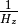
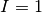
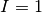
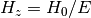
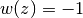
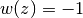

LambdaCDM¶
- class astropy.cosmology.core.LambdaCDM(H0, Om0, Ode0, Tcmb0=2.725, Neff=3.04, name='LambdaCDM')[source] [edit on github]¶
Bases: astropy.cosmology.core.FLRW
FLRW cosmology with a cosmological constant and curvature.
This has no additional attributes beyond those of FLRW.
Examples
>>> from astro.cosmology import LambdaCDM >>> cosmo = LambdaCDM(H0=70, Om0=0.3, Ode0=0.7)
The comoving distance in Mpc at redshift z:
>>> dc = cosmo.comoving_distance(z)
Methods Summary
de_density_scale(z) Evaluates the redshift dependence of the dark energy density. efunc(z) Function used to calculate H(z), the Hubble parameter. inv_efunc(z) Function used to calculate . w(z) Returns dark energy equation of state at redshift z. Methods Documentation
- de_density_scale(z)[source] [edit on github]¶
Evaluates the redshift dependence of the dark energy density.
Parameters : z : array_like
Input redshifts.
Returns : I : ndarray, or float if input scalar
The scaling of the energy density of dark energy with redshift.
Notes
The scaling factor, I, is defined by
 ,
and in this case is given by .
,
and in this case is given by .
- efunc(z)[source] [edit on github]¶
Function used to calculate H(z), the Hubble parameter.
Parameters : z : array_like
Input redshifts.
Returns : E : ndarray, or float if input scalar
The redshift scaling of the Hubble consant.
Notes
The return value, E, is defined such that
 .
.
- inv_efunc(z)[source] [edit on github]¶
Function used to calculate .
Parameters : z : array_like
Input redshifts.
Returns : E : ndarray, or float if input scalar
The inverse redshift scaling of the Hubble constant.
Notes
The return value, E, is defined such that .
- w(z)[source] [edit on github]¶
Returns dark energy equation of state at redshift z.
Parameters : z : array_like
Input redshifts.
Returns : w : ndarray, or float if input scalar
The dark energy equation of state
Notes
The dark energy equation of state is defined as
 , where
, where  is the
pressure at redshift z and
is the
pressure at redshift z and  is the density
at redshift z, both in units where c=1. Here this is
.
is the density
at redshift z, both in units where c=1. Here this is
.